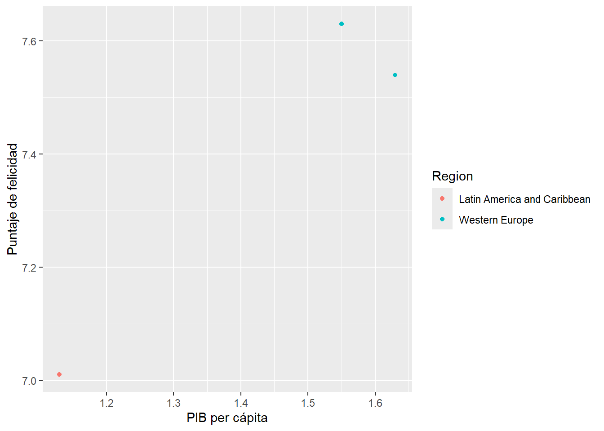
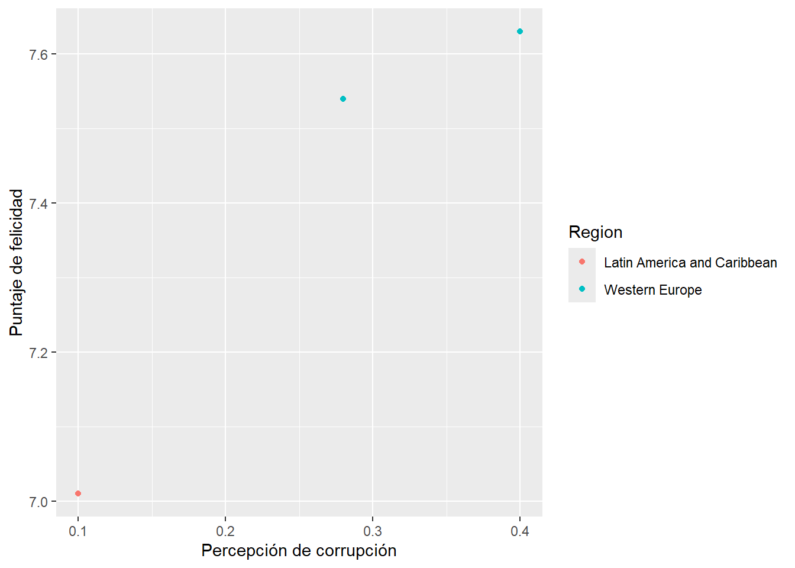

¿Qué tan feliz es el mundo? ¿Qué hace que algunas personas vivan más satisfechas que otras? ¿Será la plata? ¿Será la salud? ¿Será que algunos países simplemente tienen mejor suerte? En esta tarea se explora un conjunto de datos sobre la felicidad en el mundo, la cual se denomina como la geografia de la felicidad, con la idea de empezar a entender qué hay detrás de ese concepto tan difícil de medir.
El archivo que está usando se llama “Geography of Happiness” el cual fue encontrado en Kaggle. Tiene datos por país, organizados por variables como ingreso per cápita, libertad, salud, generosidad y otros factores. Estos datos vienen del informe mundial de felicidad, una publicación que compara países según lo felices que son sus habitantes.
El conjunto de datos
Este conjunto de datos incluye información para decenas de países. Cada fila representa un país, con sus respectivas variables:
Country: país.
Region: zona geográfica.
Happiness Score: puntaje de felicidad (más alto = más feliz).
GDP per capita: ingreso promedio por persona.
Healthy life expectancy: esperanza de vida saludable.
Freedom to make life choices: libertad percibida para tomar decisiones.
Generosity: nivel de generosidad.
Perceptions of corruption: cuánta corrupción perciben las personas.
Esto permite analizar relaciones entre distintas condiciones de vida y qué tan feliz se siente la gente.
library(tidyverse)
── Attaching core tidyverse packages ──────────────────────── tidyverse 2.0.0 ──
✔ dplyr 1.1.4 ✔ readr 2.1.5
✔ forcats 1.0.0 ✔ stringr 1.5.1
✔ ggplot2 3.5.2 ✔ tibble 3.2.1
✔ lubridate 1.9.4 ✔ tidyr 1.3.1
✔ purrr 1.0.4
── Conflicts ────────────────────────────────────────── tidyverse_conflicts() ──
✖ dplyr::filter() masks stats::filter()
✖ dplyr::lag() masks stats::lag()
ℹ Use the conflicted package (<http://conflicted.r-lib.org/>) to force all conflicts to become errors
library(plotly)
Adjuntando el paquete: 'plotly'
The following object is masked from 'package:ggplot2':
last_plot
The following object is masked from 'package:stats':
filter
The following object is masked from 'package:graphics':
layout
datos <-read_csv("happiness.csv")
Rows: 3 Columns: 8
── Column specification ────────────────────────────────────────────────────────
Delimiter: ","
chr (2): Country, Region
dbl (6): Happiness Score, GDP per capita, Healthy life expectancy, Freedom t...
ℹ Use `spec()` to retrieve the full column specification for this data.
ℹ Specify the column types or set `show_col_types = FALSE` to quiet this message.
¿Qué se quiere explorar?
Quise empezar con preguntas simples. Por ejemplo: ¿realmente los países más ricos omas dinero son más felices? ¿Qué tan importante es la corrupción en esto? ¿La gente es más feliz si siente que tiene libertad? realmente no espero obtener respuestas exactas, pero sí comenzar a ver patrones.
Mi idea es usar este dataset también en las próximas tareas, y eventualmente agregarle mapas. Tiene potencial para mostrar contrastes geográficos interesantes.
Gráfico 1: PIB vs Felicidad
Este primer gráfico muestra cómo se relaciona el ingreso con la felicidad. Hay países con mucho dinero y felicidad alta, pero también hay casos donde no es tan claro.
datos |>ggplot(aes(x =`GDP per capita`, y =`Happiness Score`, color = Region)) +geom_point() +labs(x ="PIB per cápita", y ="Puntaje de felicidad")

datos |>plot_ly(x =~`GDP per capita`, y =~`Happiness Score`, color =~Region, text =~Country,type ='scatter', mode ='markers') |>layout(title ="Felicidad vs PIB per cápita")
Warning in RColorBrewer::brewer.pal(N, "Set2"): minimal value for n is 3, returning requested palette with 3 different levels
Warning in RColorBrewer::brewer.pal(N, "Set2"): minimal value for n is 3, returning requested palette with 3 different levels
Gráfico 1: PIB vs Felicidad Explicasion
Una primera idea que quise probar fue si los países más ricos también son los más felices. El gráfico muestra la relación entre el ingreso per cápita y el puntaje de felicidad. Cada punto representa un país, y los colores indican su región.
En general, se nota una tendencia positiva: a mayor ingreso, mayor felicidad. Pero también hay excepciones interesantes, como países con ingresos no tan altos que reportan alta felicidas, aunque se puede observar que, Finlandia tiene un alto PIB per cápita y también un alto índice de felicidad, lo cual es consistente con su reputación como uno de los países más felices del mundo.
pero se observa que Costa Rica a pesar de tener un PIB per cápita más bajo, también muestra un alto índice de felicidad, lo que sugiere que la felicidad no depende únicamente del ingreso económico, sino también de otros factores como el bienestar social, el medio ambiente, la salud y la comunidad.
Gráfico 2: Corrupción percibida vs Felicidad
Este segundo gráfico compara el nivel de corrupción percibida con el puntaje de felicidad. Hay países donde la gente siente que hay poca corrupción, y eso coincide con más felicidad. En otros casos, no tanto.
datos |>ggplot(aes(x =`Perceptions of corruption`, y =`Happiness Score`, color = Region)) +geom_point() +labs(x ="Percepción de corrupción", y ="Puntaje de felicidad")

datos |>plot_ly(x =~`Perceptions of corruption`, y =~`Happiness Score`, color =~Region, text =~Country,type ='scatter', mode ='markers') |>layout(title ="Felicidad vs Corrupción percibida")
Warning in RColorBrewer::brewer.pal(N, "Set2"): minimal value for n is 3, returning requested palette with 3 different levels
Warning in RColorBrewer::brewer.pal(N, "Set2"): minimal value for n is 3, returning requested palette with 3 different levels
Gráfico 2: Corrupción percibida vs Felicidad
Costa Rica tiene una percepción de corrupción muy baja y un nivel de felicidad respetable, aunque no tan alto como los países nórdicos, pero Noruega y Finlandia tienen niveles de felicidad más altos, pero también una percepción de corrupción más elevada según este gráfico, lo cual puede parecer paradojico y sugiere que la percepción de corrupción no es el único factor que influye en la felicidad.
Conclusión
Se puede ver que no solo lso factores economicos o gubernamentales son los unicos que afectan este puntaje de la felicidad, si no que tambien hay deistintos factores, tanto como sociales como culturales, tales como la amabilidad, familia lugar de vivienda y demas, afectan a este puntaje, no centrandoce solo en factores socioeconomicos, seria de mi agrado continuar este trabajo ya que es un tema de interes , ya que muetra que no solo factores cuantitaivos pueden afectar este puntaje sino que tambien factores cualitativos .